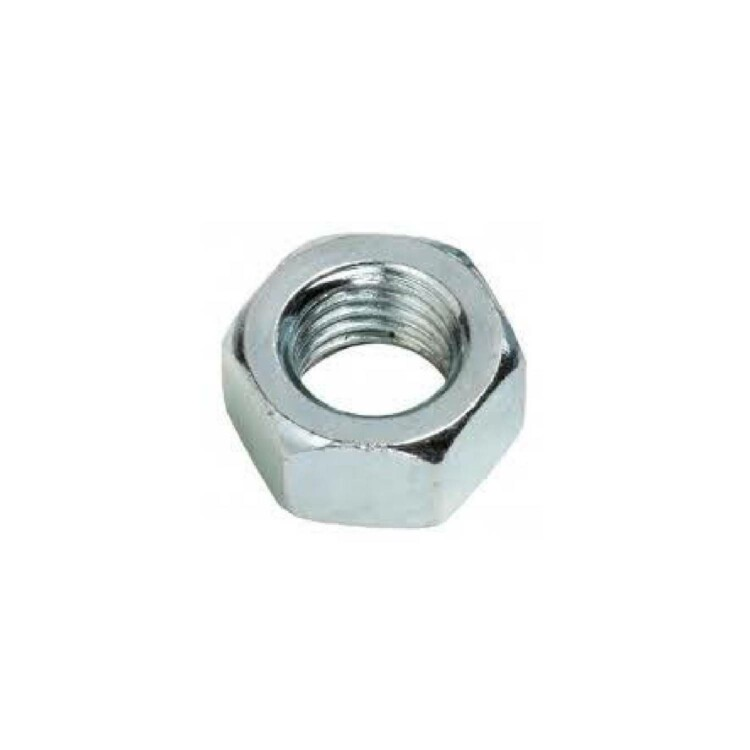
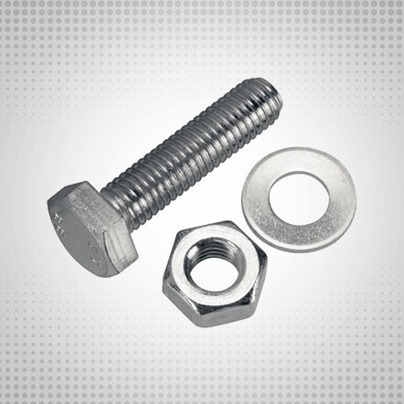

NUT
Our premium-grade nut is a high-performance fastening solution, specifically tailored to meet the unique specifications of each client. Designed for strength, durability, and long-term reliability, this component is engineered using top-quality materials and advanced manufacturing techniques to ensure flawless performance even in the most demanding environments. At Rajputana Hardware, we understand that every project has its own set of challenges. That’s why our nuts are not just off-the-shelf products—they are custom-developed to align with your exact technical requirements, ensuring perfect compatibility, enhanced safety, and long-lasting results. Backed by over 60 years of industry expertise, our premium nuts comply with all international standards and are trusted by leading multinational clients worldwide.
SCREW
Our premium screw is a precision-engineered fastening solution, meticulously crafted to meet the specific requirements of each application. Manufactured using high-grade materials and cutting-edge production processes, our screws are designed for superior grip, torque strength, and long-term durability in both standard and high-stress environments. At Rajputana Hardware, we go beyond generic solutions—each screw we produce can be customized to match the exact dimensions, threading, and coating needed for your project. Whether for electrical installations, heavy machinery, or industrial infrastructure, our screws ensure unmatched reliability and seamless integration. With over six decades of experience and a reputation built on quality, our products meet international standards and are trusted by global leaders like Siemens, Schneider Electric, and K-Electric.